Hi, I’m Lorenzo!
I’m a computer engineer interested in machine learning, game development, and mathematics.
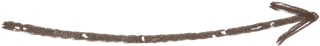
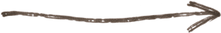
I’m a computer engineer interested in machine learning, game development, and mathematics.
I followed the science track at the Blaise Pascal Institute in Manerbio and graduated with a final score of 100/100. For my final project, I built a Unity application to illustrate the photoelectric effect.
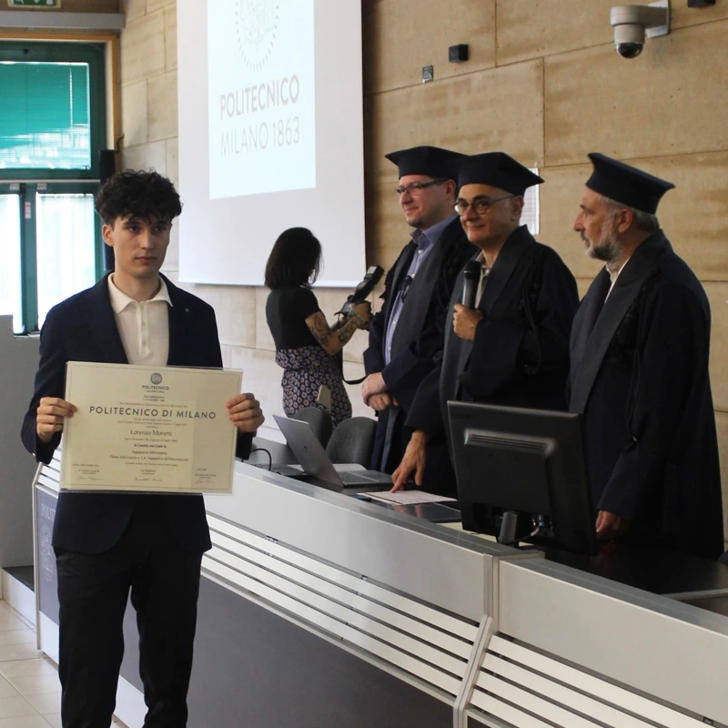
I graduated from Politecnico di Milano with a final grade of 110/110 cum laude. My projects covered algorithms, software engineering, and digital logic.
During my bachelor’s, I joined Percorsi di eccellenza, a program for high-achieving students. I kept my grades high, took extra courses, and gained industry experience over the summer. I completed the program and earned a scholarship.
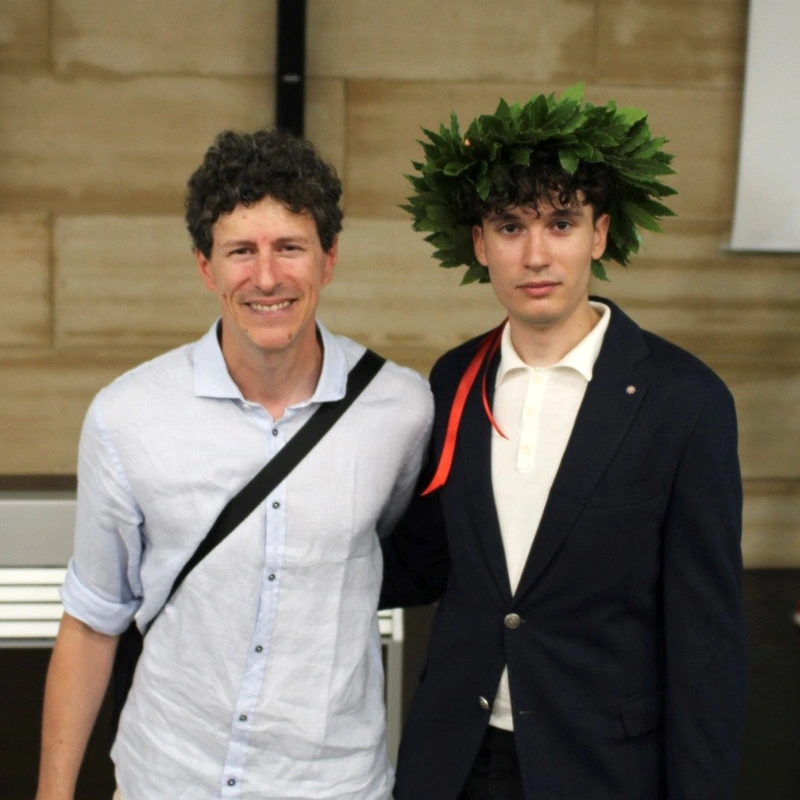
I’m finishing my master’s at Politecnico di Milano, focusing on machine learning and AI. My thesis explores how combinatorial bandits can be applied to RANSAC.
AI Engineer · Since October 2025
I work on machine learning and statistics at a Stockholm-based startup, across client consulting and in-house projects.
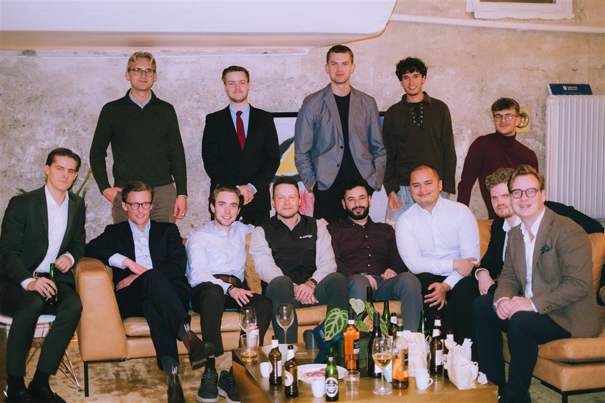
Summers 2022 and 2023
Through Percorsi di eccellenza, I built dashboards to monitor industrial machinery and developed my SQL skills.
Course project · 2023
For our software engineering course, my team adapted the board game in Java. I built a Unity-inspired engine for scenes, the game loop, and card movement.
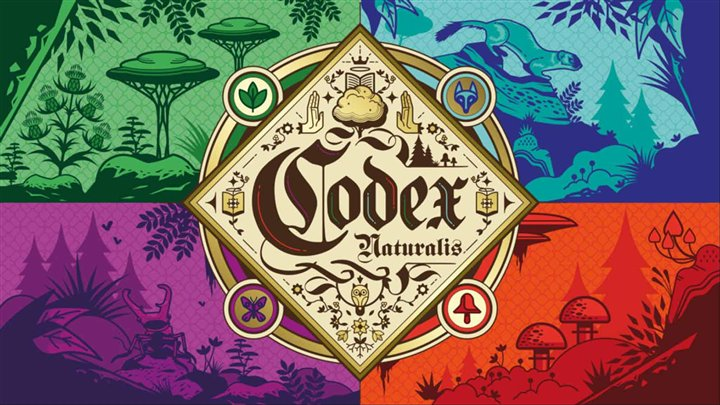
Digital Logic · 2023
I designed a hardware module to approximate sine for angles in degrees, using a lookup table and linear interpolation.
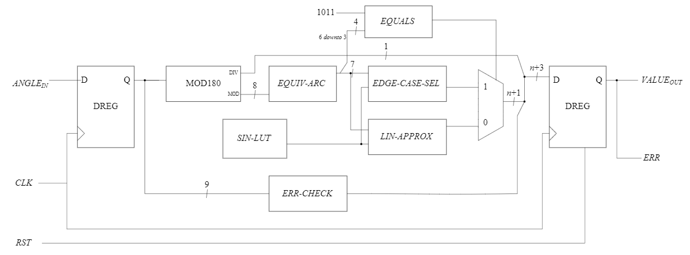
For two course challenges, my team built classifiers for time-series data and medical images.
I’ve built games in Unity and experimented with 3D prototypes and Blender. At 16, I made Becu Blocks, a 2048-inspired C# puzzle game I released on Google Play.
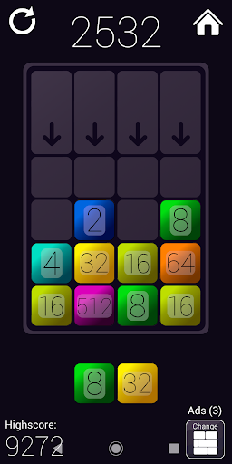
In high school, I competed in Kangourou, the Bocconi Math Games, Disfida Matematica, and the Mathematics and Physics Olympiads. I qualified for national finals several times.
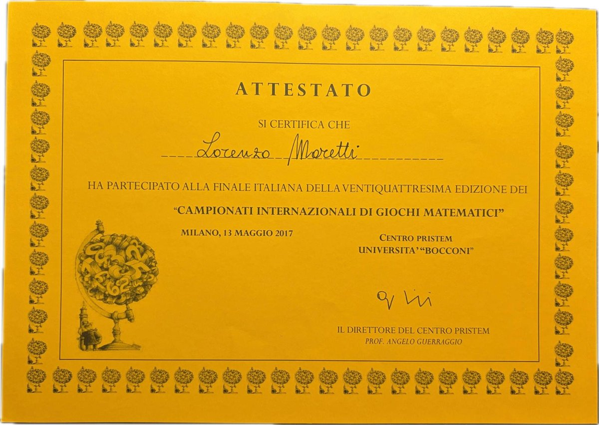
Jeff Buckley is my favorite artist. I also listen to a lot of Michael Jackson, Hozier, and Bruno Mars.
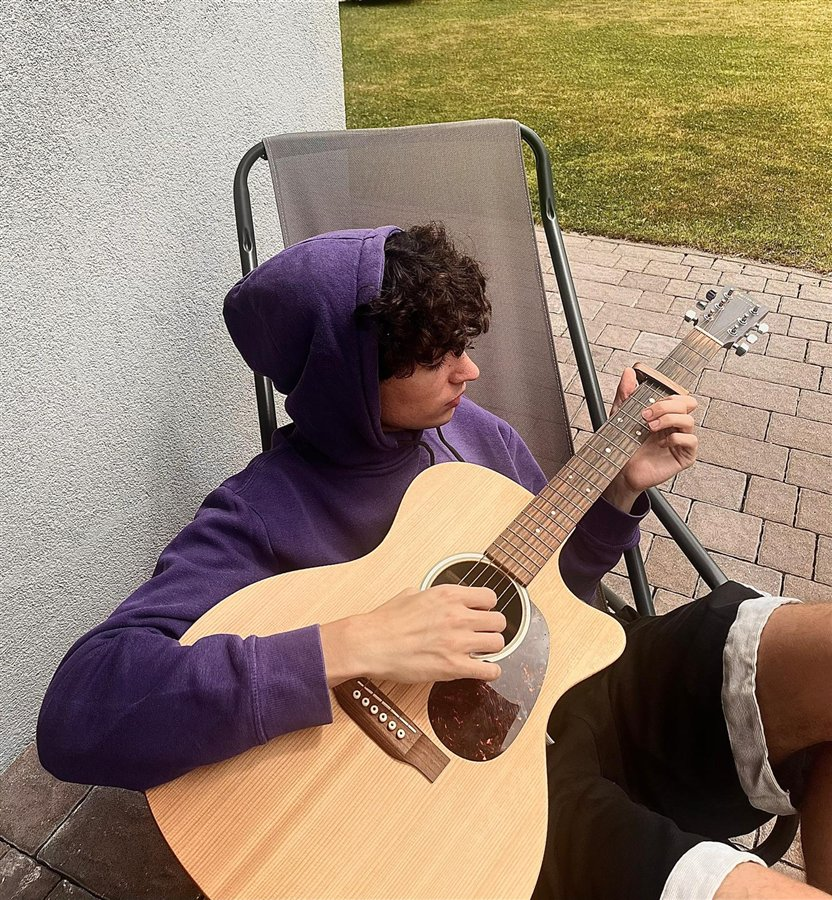
I’ve played guitar since I was 15. Learning to play and sing my favorite songs is my way of getting inside them.
I’ve been snowboarding and skateboarding since I was a kid, and they’re still my favorite sports. These days, I train regularly at the gym and do calisthenics.
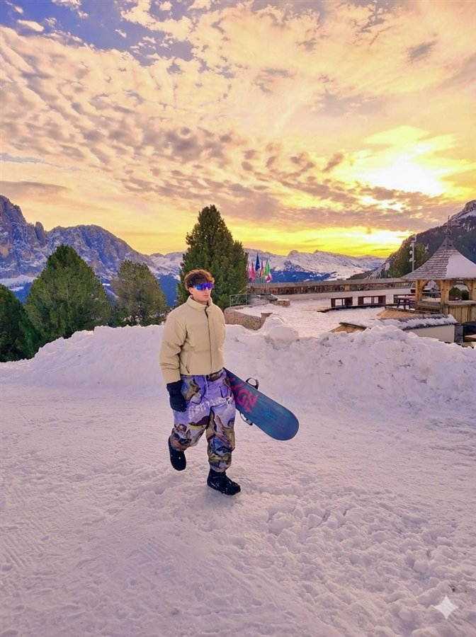
I mostly read psychological thrillers and mysteries. I also like experimenting in the kitchen and playing video games.